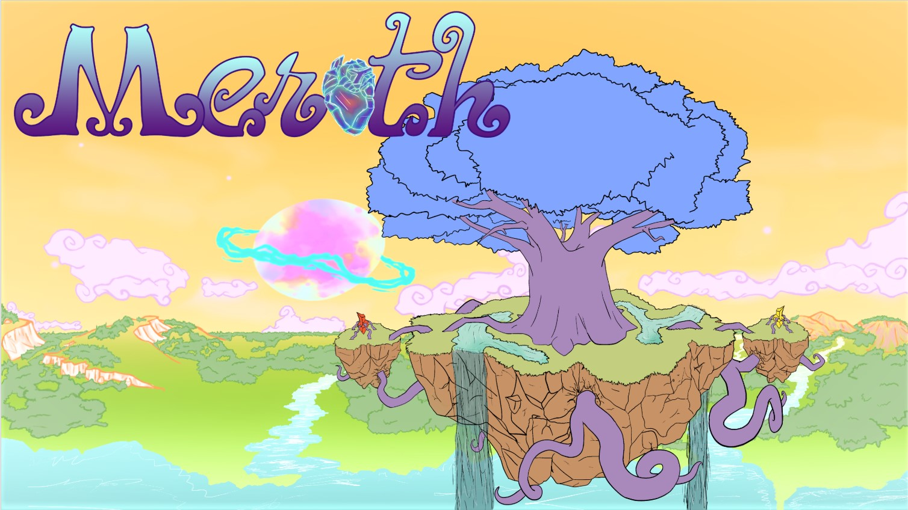
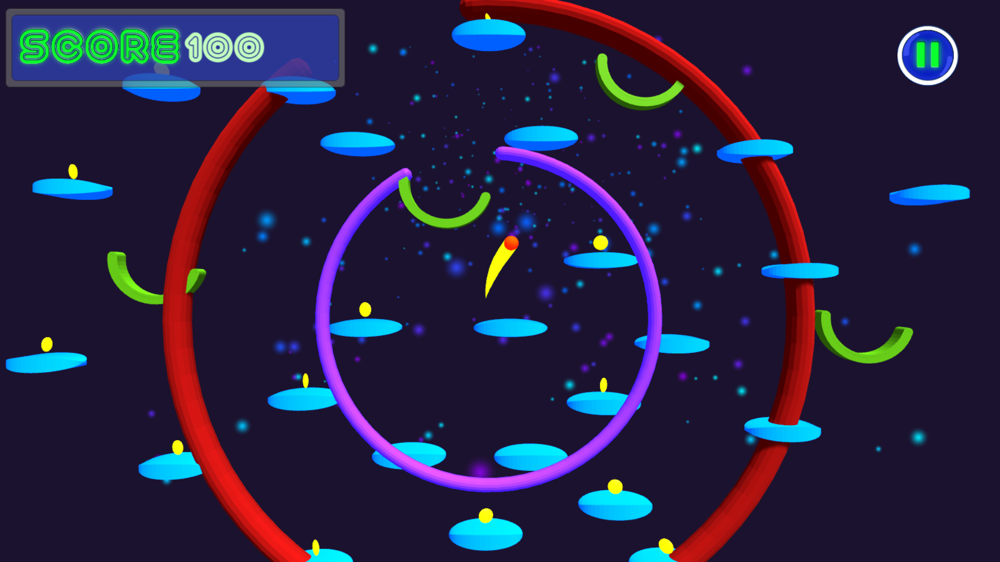
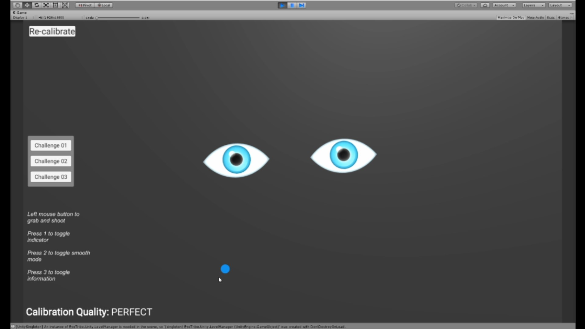
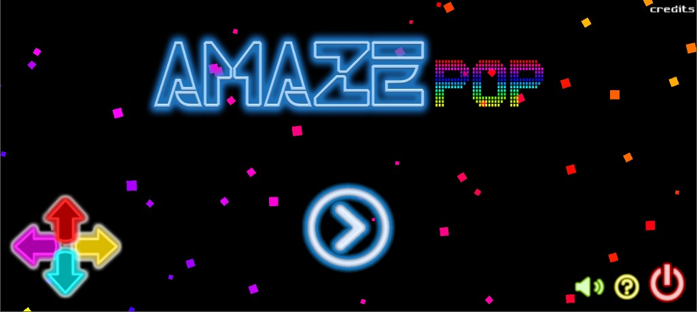

Sobre mim

Sou uma desenvolvedora de jogos apaixonada por programação, com graduação em tecnologia em Jogos Digitais pela UNIFACISA.
Video games sempre despertaram meu insteresse. Cresci jogando diversos tipos de jogos, especialmente Final Fantasy Tactics,
as franquias de Crash Bandicoot, Dynasty Warriors e Tony Hawk, além de diversos MMORPGS como Maple Story e Perfect World.

Meroth é um jogo tático de estratégia que se passa em um mundo de fantasia e jogado por quatro jogadores em dispositivo local.
Esse jogo foi desenvolvido como projeto de TCC do curso de Jogos Digitais da Unifacisa.

Ball Out é um jogo que foi criado no evento Ludum Dare 42, com um grupo de amigos em um final de semana.
Jogo 3D com um Dispositivo de Eye Tracking

Um pequeno projeto criado pela experiência de desenvolver um jogo usando o dispositivo de rastreamento de olho da the Eye Tribe.
Jogo de Puzzle e Música 2D

Amaze Pop é um jogo que mistura o gênero de puzzle com música, onde o jogador tem que fazer duas coisas ao mesmo tempo.
Esse projeto foi desenvolvido ao final do curso Gamer Dev da Gracom.